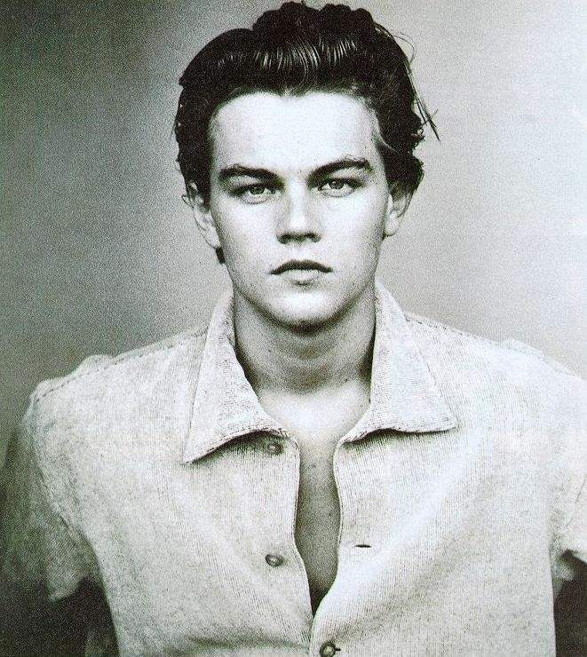

Leonardo DiCaprio

1998年，万众瞩目的小李出演了改编自大仲马原著的古装制作《铁面人》。英俊如他，自然古装时装两相宜，长发的法国宫廷扮相更显俊美，却没想到搞出了一部金酸梅作品。其实在片中分饰两角的小李，表演并不差，要怪就怪兰道尔•华莱士这个扑街导演（虽然他写出过《勇敢的心》这样的剧本）。小李开始明白，要拍出更好的作品，除了自身努力，选择导演也很重要。
于是，2000年，小李接拍了凭借《猜火车》震惊世界的新锐导演丹尼•保尔的新片《海滩》，没想到英国人到了好莱坞水土不服，电影又一次被提名金酸梅，奖项甚至直指最差男主角。尽管还有美国青少年观众票选大奖的安慰，但小李已然不再满足于商业影响，转而向更高的专业领域看齐。
2002年，小李再次获得好莱坞顶级导演垂青。 他先是获邀参演大导演斯皮尔伯格的《猫鼠游戏》，与之搭档的是奥斯卡影帝汤姆汉克斯。斯皮尔伯格不用多说，他重建了好莱坞商业大制作的标准，拍出一大堆叫好叫座的高概念经典，同时也凭借《辛德勒名单》、《拯救大兵瑞恩》这样深刻思想性与商业元素完美结合的作品，得到奥斯卡肯定。可惜，《猫鼠游戏》只是斯皮尔伯格拍的一部轻松小品，尽管小李在电影中的制服装帅到飞起，尽管他演的非常好，在汉克斯面前也没有输掉气势，尽管他获得了当年金球奖剧情类最佳男主角提名，可是依然没得到奥斯卡的关注，连提名也没拿到。
2004年，小李继续与西科塞斯合作，拍摄了传记电影《飞行家》。电影讲述了美国飞行大亨霍华德•休斯的传奇人生，并获得了巨大肯定。在电影中，小李的角色从20岁一直到50多岁，跨度巨大，情绪丰沛。在次年奥斯卡颁奖礼上，本片惊人地得到了最佳影片、最佳导演、最佳男主角、最佳男配角、最佳女配角、最佳原创剧本、最佳摄影、最佳剪辑、最佳服装、最佳美术设计等十一项提名。小李和同样渴望奥斯卡久矣的西科塞斯都距离小金人非常之近。小李甚至已经拿到了号称奥斯卡风向标的金球奖最佳男主角，一切看起来都理所当然。谁知从半路杀出一位杰米•福克斯，黑人演员，真人传记题材，讲述传奇盲人歌手的美国梦，还是一部小成本制作，一切都是按照奥斯卡评委们的口味炮制。就这样，小李与奥斯卡完成了一次极为亲密的擦身飞行。
念念不忘，必有回响，再一次，小李凭借《华尔街之狼》，第五次获得奥斯卡提名。然而，已经功成名就的西科塞斯，显然不愿意再继续讨好学院了。他在《华尔街之狼》中充分展示了自己的任性与恣意妄为，密集的脏话、裸体、群交与吸毒充斥着电影。这样的惊世骇俗当然不可能讨好年龄普遍偏大的评委们，据说在学院成员转场放映中，电影就遭到了强烈批评。何况，小李还碰到了更加变态的对手——马修•麦康纳，他与克里斯蒂安•贝尔一样都是为了角色能够随时膨胀和萎缩的“橡皮狂人”，全身上下每个毛孔都在释放着表演的欲望。